Low-cost turbidity probe | Light-to-frequency converter
The continuous and excessive water use due to the developing industry and agricultural activities creates a strong pressure on water resources, leaving the aquatic ecosystem vulnerable to large-scale degradation. Water resources management and protection are at the core of sustainable development, and require constant monitoring and assessing, being a key element to minimizing the negative impacts on these ecosystems. One of the most important indicators of water quality is the relative cloudiness of water caused by chemical precipitates, organic and inorganic compounds, and microorganisms.
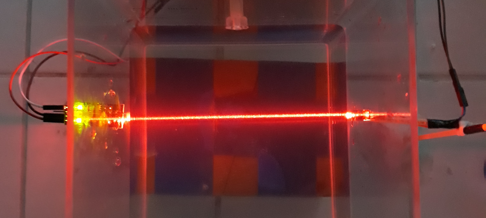
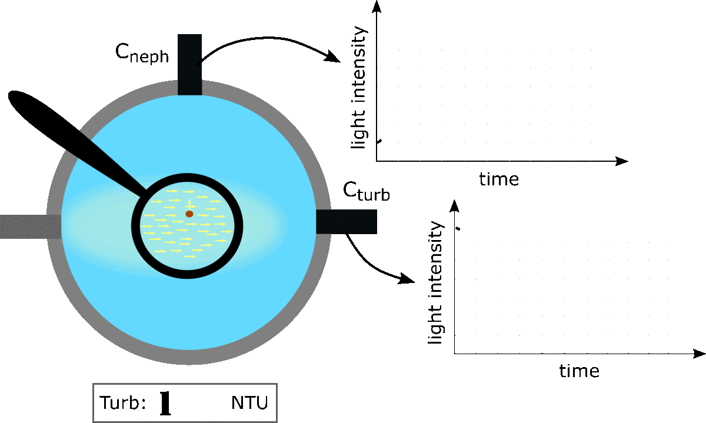
Although the increase of turbidity causes a reduction in water visibility, the effect on water quality is not limited to water cloudiness. Suspended particles present can serve as a refuge for pathogens, heavy metals, and pesticides, and for that reason, turbidity is one of the most important parameters to describe water quality.
Turbidity meters work based on optical scatters and transmit-detection techniques. The light emitted by the light source is absorbed, reflected, and dispersed by suspended particles present in the water. The light detectors, mounted at different angles from the light source, are responsible to capture the light and correlate it with the amount of suspended particles present in the water sample (Fig 2).
For example, if the light detector is positioned at 90° from the light source (Cneph), the cell will have a higher light response under higher turbidity waters (this is known as the nephelometry principle). On the other hand, if the detector is positioned aligned with the light source (Cturb), the cell will detect higher light intensity for lower water turbidity values, since most part of the light will not be scattered by suspended particles.
Commercial turbidimeters that perform continuous turbidity monitoring cost around 7000 Euros. Due to the high cost of commercial turbidity sensors, recently many low-cost turbidity meters have been proposed. The aim of this pair of studies is to describe the design and fabrication of a low-cost smart turbidity meters, and investigate the capability of this sensor to provides additional information about the water quality based essentially optical scatters and transmit-detection techniques. Thus, in this section we do not pretend to mention previous observations conducted with analog turbidity sensors that uses ADC (Analog-to-digital converter) transmission to read signals and correlate with turbidity readings. For more information about this previous designed probes, click here.
Enhancing eutrophication analysis with an advanced turbidity meter (Abu Dhabi probe)
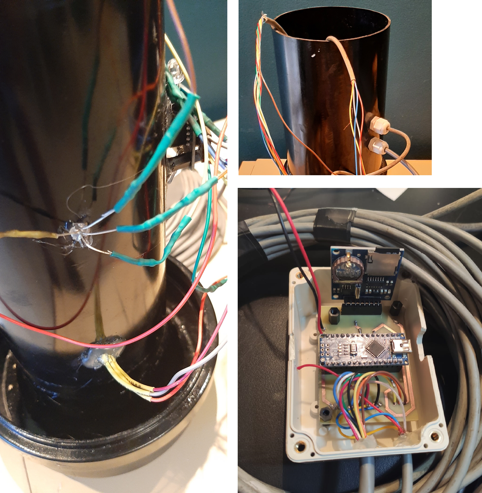
Abu Dhabi is the third generation of our turbidity probes and the first one built entirely around a digital light-to-frequency detector. Differently from the light-dependent resistor (LDR) used in Paris and Bangkok — an analog component whose resolution is capped by the 10-bit analog-to-digital converter of the microcontroller — the TCS230 color-to-frequency converter outputs a square wave (50 % duty cycle) whose frequency is proportional to the incident light intensity. The module carries 64 photodiodes arranged in four arrays: red-, green-, blue-filtered and unfiltered (clear).
The RGB light-emitting diode is cycled through three emission colors (white, green and red), and for each of them the TCS230 is switched between its filter arrays. Every measurement cycle therefore returns a matrix of nine emitter–receptor (E&R) pairs instead of a single intensity value. The emission colors were chosen from the absorption spectra of chlorophyll a and b, so that green algae blooms could in principle be separated from suspended particles unrelated to photosynthetic organisms (e.g. mineral sediment).
This section summarises the completed study: design, laboratory calibration over 0–200 NTU, independent validation, chlorophyll-detection experiments with Chlorella sp., and continuous monitoring of a simulated turbidity plume in a recirculating tank. The whole sensing head costs approximately US$ 50.
Probe design
The sensor housing was machined from a black 10 cm diameter polyvinyl chloride (PVC) pipe, with the sampling area located inside the pipe wall so that water flows freely through it. The 5 mm RGB light source is mounted at 90° from the TCS230, at the same level (Fig 4), which means the probe reads under the nephelometric principle. The LED is covered with a polyethylene diffusion filter that homogenises the beam and damps the light-scattering noise generated by turbulence inside the chamber. A small circular glass window separates the sampling area from the electronic module, keeping the detector dry.
A 15 cm diameter PVC pipe wraps the whole assembly and isolates the electrical circuit from direct contact with water. The submersible unit connects to the main station through 11 wires.
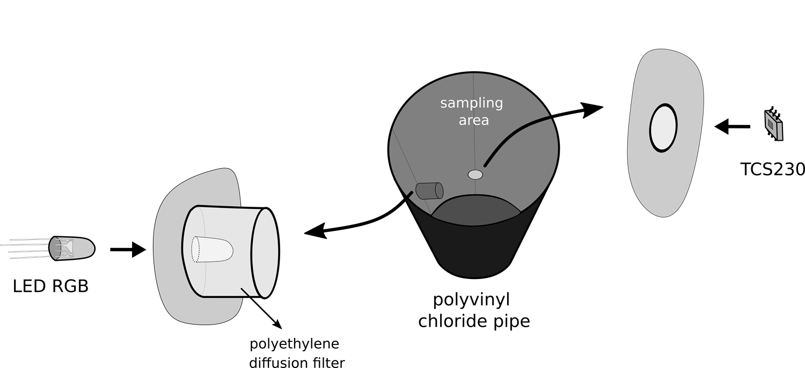
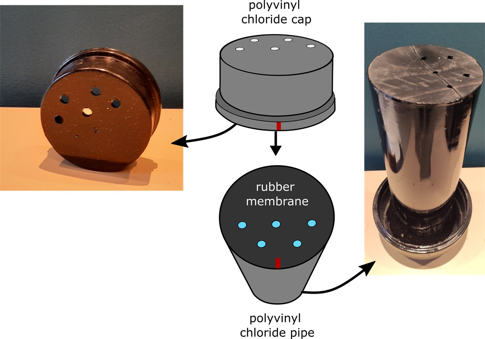
External light is the main source of error in low-cost optical turbidimeters. To suppress it, a rubber membrane and a PVC socket cap were installed at both ends of the internal tube (Fig 5). Both are regularly perforated with 5 mm apertures and are spaced by roughly 2 cm, but their holes are deliberately misaligned. The result is a maze-like pattern: water flows through, light does not.
This design solved the ambient-light problem, but — as the continuous experiments later showed — it also became the main limitation of the prototype, since it increases the residence time of suspended particles inside the measurement chamber.
The main station holds the microcontroller, the battery and the data logger. We used a Deek-Robot ID:8122 data logging board, which combines a DS1307 real-time clock with a microSD card reader. The logger stores the output frequency of all three RGB channels for each of the three emitted colors, that is, the full nine-output combination, sampled at 1 Hz. The probe was powered by a computer during the laboratory experiments, but a regulated battery pack allows prolonged autonomous deployments in remote areas.
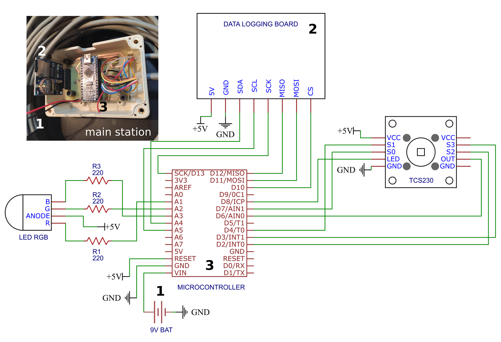
Calibration: 0–200 NTU
Calibration was carried out in the laboratory by injecting a Formazin Turbidity Standard (4000 NTU) into the interior of the probe with a syringe, progressively increasing the concentration of suspended particles from 0.8 to 200 NTU. The range was deliberately biased towards low turbidity values — including levels that the human eye cannot resolve — because the target application is water supply reservoirs, where turbidity rarely exceeds 100 NTU. Each round was recorded for 3 minutes at 1 Hz (60 measurements per emitted color and per RGB component), after which a water sample was extracted from the chamber and read with a DLT-WV digital light-scattering turbidimeter (±2 % precision, 0.01 NTU resolution below 10 NTU). The procedure was repeated at least 19 times per experiment, and five full calibration campaigns were run between February and September 2025 to capture day-to-day variability.
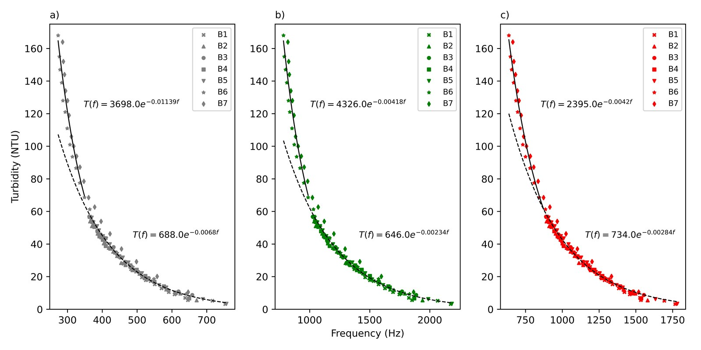
For every emitted color and every RGB channel the output frequency decreases exponentially with turbidity (Fig 7). This confirms that the probe operates nephelometrically: as suspended solids increase, more light is scattered and absorbed before reaching the single detector window, so fewer photons arrive and the output frequency drops.
A single exponential could not describe the whole range, so the calibration was split into two intervals and fitted with a double-exponential model:
T(f) = a exp(b f) (1)
where T is turbidity (NTU), f is the TCS230 output frequency (Hz), and a and b are the two calibration parameters, fitted separately for 0–80 NTU and 80–200 NTU. Alternative models (four-parameter logistic, among others) were tested, but the exponential gave the best fit with the fewest parameters.
The fit is excellent and remarkably uniform across the E&R pairs: R² = 0.991 ± 0.002 for the low range and R² = 0.995 ± 0.001 for the high range. Only the red–green pair had to be discarded: its output frequency exceeded the numerical limit of the counter register, wrapping the values to the negative end of the scale.
| Emitter | Receptor | Curve 1 (0–80 NTU) | Curve 2 (80–200 NTU) | Total RMSE | ||
|---|---|---|---|---|---|---|
| R² | RMSE | R² | RMSE | |||
| White | Red | 0.993 | 2.17 | 0.996 | 7.53 | 4.30 |
| White | Green | 0.990 | 1.39 | 0.994 | 9.36 | 5.06 |
| White | Unfiltered | 0.991 | 1.63 | 0.995 | 9.05 | 4.92 |
| Green | Red | 0.998 | 1.53 | 0.993 | 9.59 | 4.43 |
| Green | Green | 0.991 | 1.42 | 0.994 | 9.12 | 4.88 |
| Green | Unfiltered | 0.991 | 1.37 | 0.994 | 9.51 | 4.99 |
| Red | Red | 0.993 | 2.21 | 0.997 | 7.27 | 4.20 |
| Red | Unfiltered | 0.994 | 1.88 | 0.997 | 6.93 | 4.01 |
Validation
Two additional and fully independent experiments were used to validate the curves, with a new set of turbidity levels prepared from the Formazin standard over the same range (Fig 8).
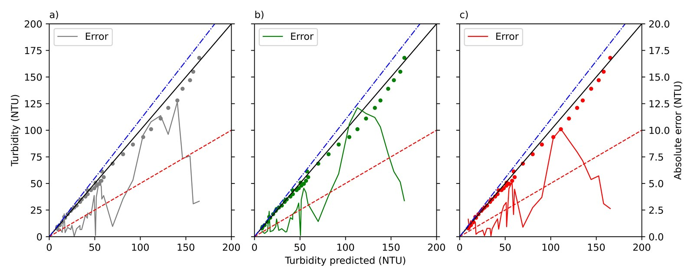
Averaged over all valid E&R pairs, the probe achieved an RMSE of 2.80 ± 0.75 NTU between 0 and 80 NTU and 12.04 ± 0.76 NTU between 80 and 200 NTU, giving 7.44 ± 0.53 NTU across the full scale — with less than 6 % spread between pairs. The maximum absolute error rarely exceeded 11 %, which places the prototype at the level of recently published low-cost probes and within a factor of two of commercial instruments.
The best overall performance came from the red–unfiltered pair (total RMSE 4.01 NTU, mean relative error 2.9 %), while the green–unfiltered pair was marginally better in the low range (RMSE 1.37 NTU). Because the differences between pairs are small, we adopted the white–unfiltered pair for routine turbidity readings: it keeps the physical principle as simple as possible and minimises sensitivity to the color of the suspended particles.
Detecting algae: the frequency-ratio approach
The second objective was to test whether the probe can tell what is making the water turbid. Five laboratory experiments were run with natural Chlorella sp. suspensions (spherical unicellular algae, 2–10 µm in diameter) at different background chlorophyll levels — 13, 40, 49, 133 and 259 µg L-1 — while turbidity was raised with the Formazin standard exactly as in the calibration. Chlorophyll was quantified with an AquaFlash handheld active fluorometer, which measures total chlorophyll and photosynthetic efficiency by in vivo fluorescence.
The physical basis is shown in Fig 9: the green-filtered photodiode array of the TCS230 overlaps the absorption bands of chlorophyll a and b, whereas the unfiltered array integrates the whole visible range. The ratio between the two should therefore carry a pigment signal.
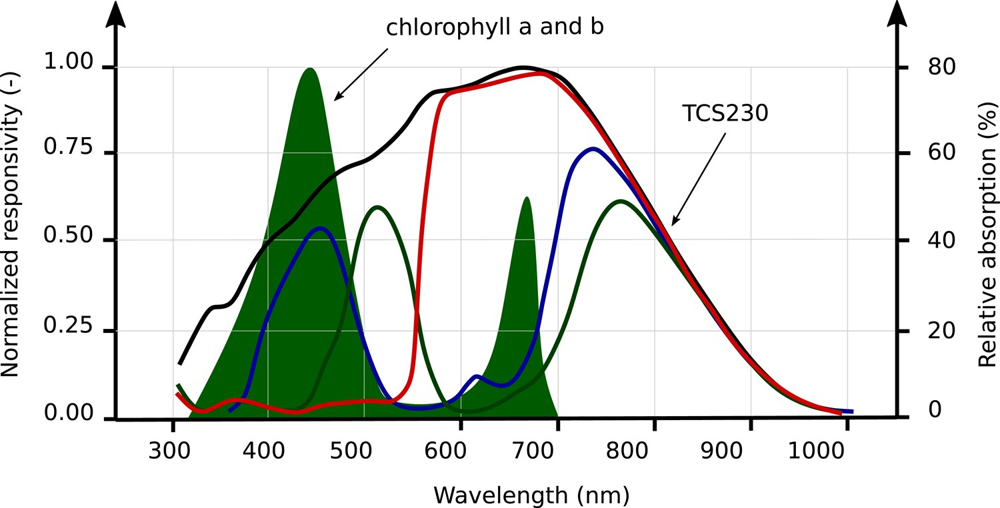
The result was not what a naive reading would suggest: no single output frequency tracked chlorophyll. Samples with higher chlorophyll did not show a proportionally higher green component. What did work was the ratio between the green-filtered and the unfiltered channel, fG/fC, and only under white illumination — green and red emission carried no diagnostic information (Fig 10a).
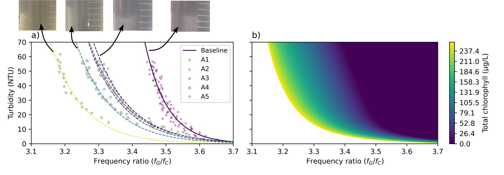
Each chlorophyll level defines its own curve in the turbidity–ratio plane, shifted to the left of the chlorophyll-free baseline. In other words, for the same turbidity, greener water pushes the ratio down — a measurable and monotonic separation between algal and mineral turbidity. To turn this into a calibrated surface (Fig 10b) we fitted a double-exponential mixed model that captures both the nonlinear response and the interaction between ratio and turbidity:
C(f,T) = a0 + a1exp[−a2(f−3.1)] + a3exp(−a4T) + a5exp[−a6T(f−3.1)] (2)
where T is the turbidity obtained from Eq. 1 and f is the non-dimensional ratio fG/fC. The seven coefficients were obtained by nonlinear least squares with a Levenberg–Marquardt optimiser, and negative predictions were clipped to zero.
A control experiment replaced the algal suspension with green food dye containing almost no chlorophyll (at most 20 µg L-1). The probe reproduced a similar trend, although with different sensitivity. This is an important caveat: the response is driven by color, not by pigment fluorescence, so any substance with a comparable visible signature will bias the reading.
Continuous monitoring in a recirculating tank
Bench calibration says little about how a probe behaves when conditions change in time. We therefore mounted the sensor on a 1 m long glass tank (58 cm high, 7000 cm² surface area, filled to 10 cm) with a pump circulating water through the probe chamber (Fig 11). A secondary reservoir above the tank fed a high-turbidity solution (20 L of water with 800 mL of 400 NTU Formazin, mean turbidity 180 NTU) by gravity at a constant 13.06 mL s-1, while an equal volume was withdrawn at the opposite end to hold the water level constant. An air bubble generator kept the reservoir homogeneous and prevented settling.
After roughly 60 min of injection, clean water was introduced for about 1.5 h to flush the system, simulating the passage and decay of a turbidity plume. Reference samples were collected upstream and downstream of the probe throughout the experiment.
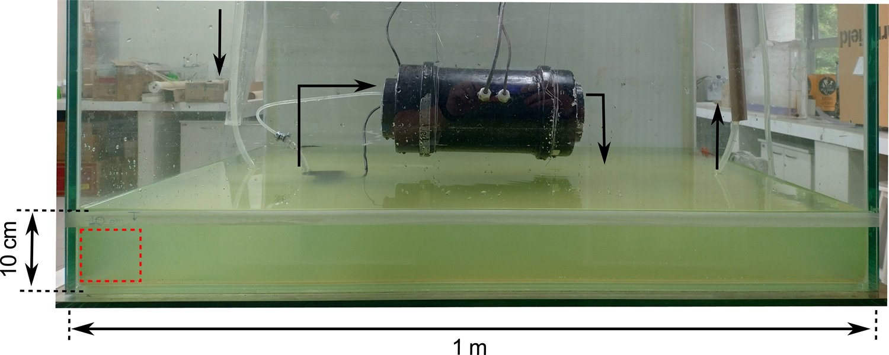
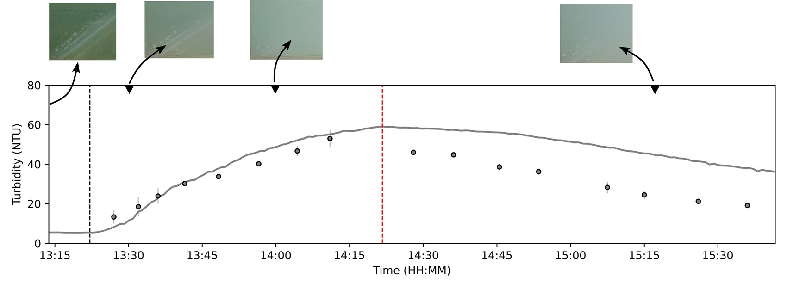
In the first experiment (turbidity only, Fig 12) the probe tracked the rising limb accurately — RMSE 8.91 NTU, relative error 25 % — and captured the peak concentration immediately before the clean-water flush. The falling limb, however, was not reproduced: the reference instrument recorded a much faster decline than the probe (RMSE 24 NTU, relative error 79 %). The probe kept reporting turbid water long after the tank had visibly cleared.
The explanation is hydrodynamic, not optical. The maze-like light blocker that so effectively excludes ambient light also retains suspended solids inside the measurement chamber, so the water seen by the detector lags the water in the tank. This is a design trade-off, and it defines the main improvement target for the next version.
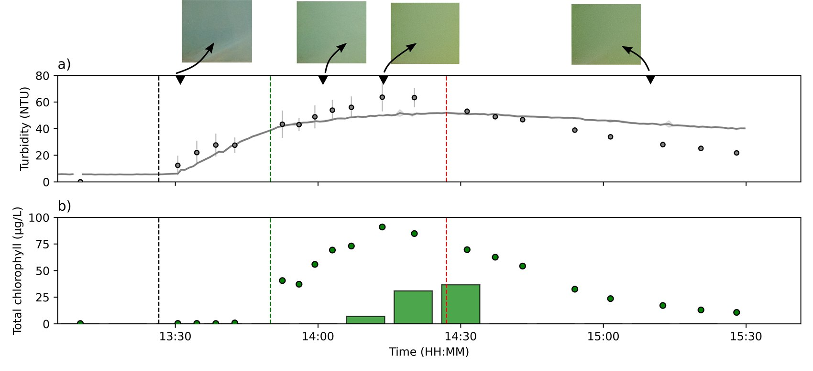
The second experiment added Chlorella to the reservoir after 23 min, reaching 585.67 µg L-1 of chlorophyll in the injected solution. Turbidity was again well captured during the rising limb (RMSE 6.0 NTU, relative error 18 %) and, importantly, the turbidity signal was not corrupted by the presence of algae (Fig 13a) — the two measurements remain independent.
The probe was programmed to report, every 15 minutes, the maximum chlorophyll detected within the interval. It flagged the bloom 15 minutes after the release and correctly tracked both its growth and its decay once clean water entered the tank (Fig 13b). The concentrations themselves, however, did not match the fluorometer: a 59 % difference at the peak. The conclusion is clear and worth stating plainly — the probe is a reliable detector of algal turbidity, but not a quantifier of chlorophyll.
What the prototype delivers, and where it fails
Confirmed capabilities
- Turbidity over 0–200 NTU with R² > 0.99 and relative error below 10 %, for a sensing head of roughly US$ 50.
- Accuracy equivalent to recently published low-cost probes, using a fully open-source and modular architecture.
- Qualitative separation of algal turbidity from mineral turbidity through the fG/fC ratio under white illumination — something broadband LDR-based designs cannot achieve with the same spectral discrimination.
- Turbidity and algal signals remain independent in a dynamic, time-varying experiment.
Open limitations
- Chamber hydrodynamics. The maze light blocker retains particles and produces a long lag on the falling limb (79 % relative error). Candidate fixes: internal wipers, or removal of the maze combined with ambient-light rejection by differencing LED-on and LED-off readings.
- Chlorophyll is detected, not measured. 59 % error at the peak, and a 15-min reporting lag.
- Color, not pigment. The green food dye control shows that any similarly colored substance biases the response.
- Single species, single target. Calibrated for Chlorella only. Cyanobacteria, diatoms or mineral sediment would require new experiments and probably different E&R pairs — the red channel is the natural candidate for sediment.
- Four broad bands. The TCS230 samples the visible range through only four filters, far from a spectral measurement.
Next step: from three colors to a full spectrum
Every limitation listed above traces back to the same root cause: four broad filters are not a spectrum. The TCS230 collapses the entire visible range into four responsivity curves (Fig 9), so any two constituents that reflect similar visible light become indistinguishable. Green food dye looks like Chlorella. Cyanobacteria, whose diagnostic pigment phycocyanin absorbs near 620 nm, would look like green algae. And chlorophyll cannot be quantified, because a single ratio cannot invert a mixture of several optically active constituents.
The next study replaces the color-to-frequency converter with a low-cost spectrometer front-end — a multi-channel spectral sensor covering the visible and near-infrared range in narrow bands, rather than four broad ones. The optical geometry, the housing and the open-source logging architecture developed for Abu Dhabi are retained; only the detector and the inversion model change.
The cost penalty is real but bounded: such modules cost around US$ 70 against US$ 9 for the TCS230, which raises the sensing head from roughly US$ 50 to about US$ 110. That is still one to two orders of magnitude below a commercial multiparameter sonde (in excess of US$ 8000), and the additional spectral information is precisely what the turbidity-source problem requires.
The study is organised around four objectives:
- Spectral signatures. Characterise, inside the same housing and under controlled conditions, the spectral response of the main optically active constituents of inland waters: mineral sediment, green algae, cyanobacteria and coloured dissolved organic matter. This is the reference library that the current probe lacks.
- Multivariate inversion. Replace the single-ratio model of Eq. 2 with a multivariate retrieval — band ratios and partial least squares regression over the full set of channels — aiming at quantitative chlorophyll and phycocyanin rather than qualitative detection, and at the simultaneous separation of the mineral fraction.
- Chamber redesign. Remove the maze-like light blocker and reject ambient light by differencing measurements with the emitter switched on and off, an approach already validated in the literature. Evaluate an internal wiper for long deployments. The target is to eliminate the falling-limb lag documented in Fig 12.
- Field deployment. Move from the recirculating tank to a water supply reservoir, integrated with the telemetry platform developed in parallel, and benchmarked against a ruggedised commercial sonde over a full seasonal cycle.
Two results from the completed study transfer directly and are worth carrying forward. First, the double-exponential turbidity calibration (Eq. 1) is robust and largely independent of the emitter–receptor pair, so the turbidity module needs recalibration but not redesign. Second, the ratio-based approach — normalising a pigment-sensitive channel by a broadband one — is what made pigment detection possible at all, and it generalises naturally to a spectrometer, where every band can be normalised against every other.
A manuscript describing the design, calibration protocols, supplementary experiments and full coefficient tables of the Abu Dhabi probe is in preparation. If you are interested in the hardware, in the calibration datasets, or in joining the spectrometer study, please get in touch.